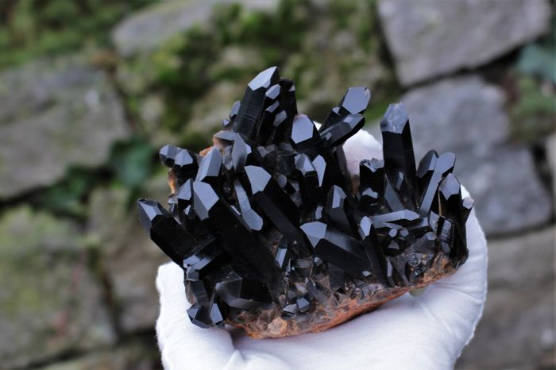

Arriba, una roca de cuarzo pulida para su uso en joyería.
El cuarzo rosa es un mineral muy abundante en la corteza terrestre. Los mayores yacimientos se encuentran en Estados Unidos, Brasil, Inidia, Madagascar, Kenia, Namibia, Sri Lanka y Mozambique.
CUARZO ROSA
El cuarzo rosa adquiere este color tan característico cuando a su composición pura se le añaden impurezas de manganeso y titanio. Sin embargo, si se expone mucho tiempo a los rayos solares, disminuye su intensidad y se vuelve más oscuro.
Aunque puedan parecerse entre ellos, cada tipo de mineral tiene sus propios cristales. El tamaño de los cristales depende del tiempo que tardan en formarse: a menos velocidad, más grande será la pieza.
Cuarzo rosa pulida para su joyería.
-
Clase:
Tecnosilicatos (subdivisión en la clasificación de Strunz)
-
Fórmula química:
SiO 2
-
Composición:
Silico y oxígeno
-
Dureza:
7 en la escala de Mohs
-
Exfoliación:
Ninguna
-
Fractura:
Concoidea
-
Color:
Rosa intenso, rojo y rosa pálido
-
Brillo:
Vítreo
-
Raya:
Blanca
-
Sistema cristalino:
Trigonal o hezagonal
El cuarzo tiene aplicaciones en la joyería
El cuarzo puro suele ser blanco o transparente, pero según varía su composición también puede ser rosa, rojizo o incluso negro
El cuarzo es muy útil en el campo de la tecnología, sobre todo en la fabricación de aparatos de presisión e instrumentos científicos.
¿Sabías que...?
Los antiguos griegos se referían al cuarzo con la palabra "krystallos", la misma que utilizaban para nombrar el hielo, seguramente por el característico color transparente de este mineral. La palabra "cuarzo", sin embargo, proviene del término alemán "quarz" y la primera persona que la utilizó fue Georgius Agricola, un alquimista, químico y mineralogista del siglo XVI que está considerado el fundandor de la mineralogía moderna.
¿Por qué existen tan pocos cristales de cuarzo rosa?
Es una pregunta difícil de responder. El cuarzo cristaliza con relativa facilidad en todas sus variedades. El cuarzo rosa suele encontrarse como piedra en grandes cantidades, pero hasta el momento solo se ha descubierto en forma de cristal en algunos yacimientos de Brasil.
Propiedades del Cuarzo rosa
El cuarzo ROSA es un mineral de la clase de los silicatos y tiene este color tan característico por la presencia de pequeñas impurezas de manganeso y titanio. Actualmente se utiliza en la fabricación de instrumentos digitales y relojes, además de como elemento medicinal.
El hecho de que el cuarzo rosa sea una piedra tan común y más bien turbia ha provocado que, con el paso de los siglos, haya dejado prácticamente de usarse en joyería en favor de otras piedras preciosas de color parecido como el topacio rosado.